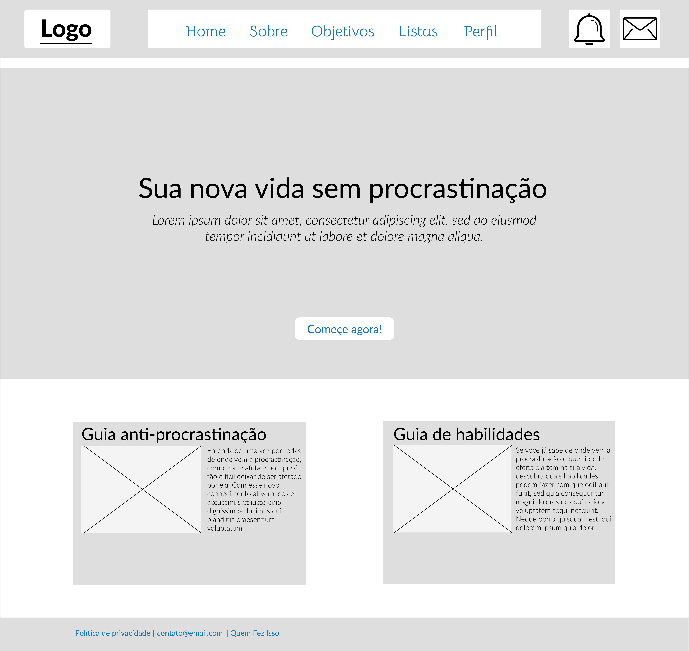
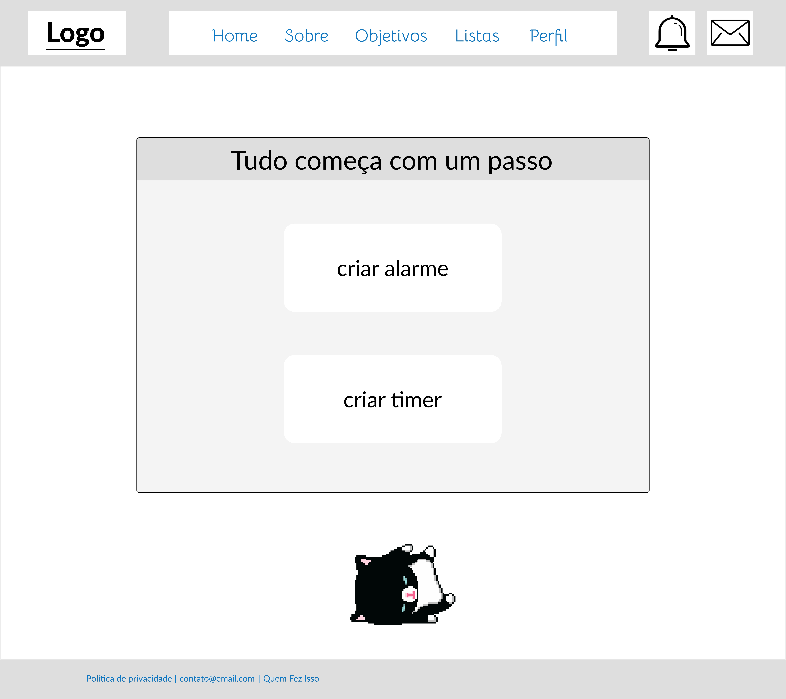
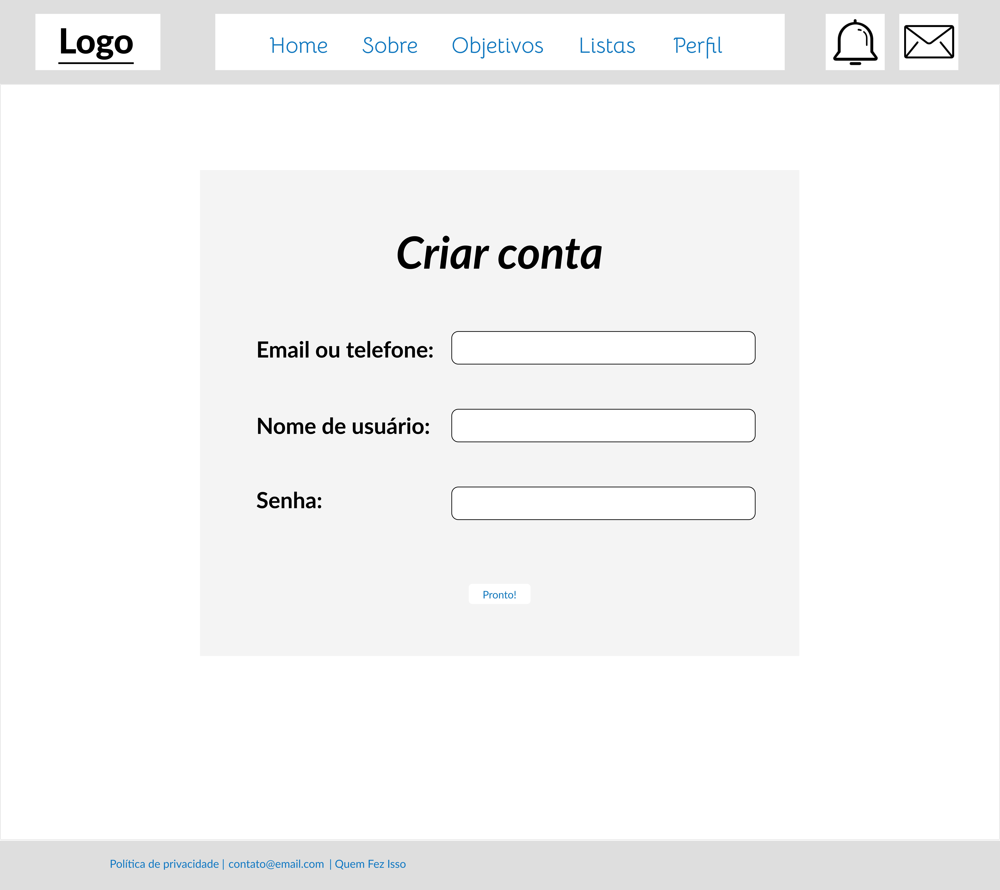
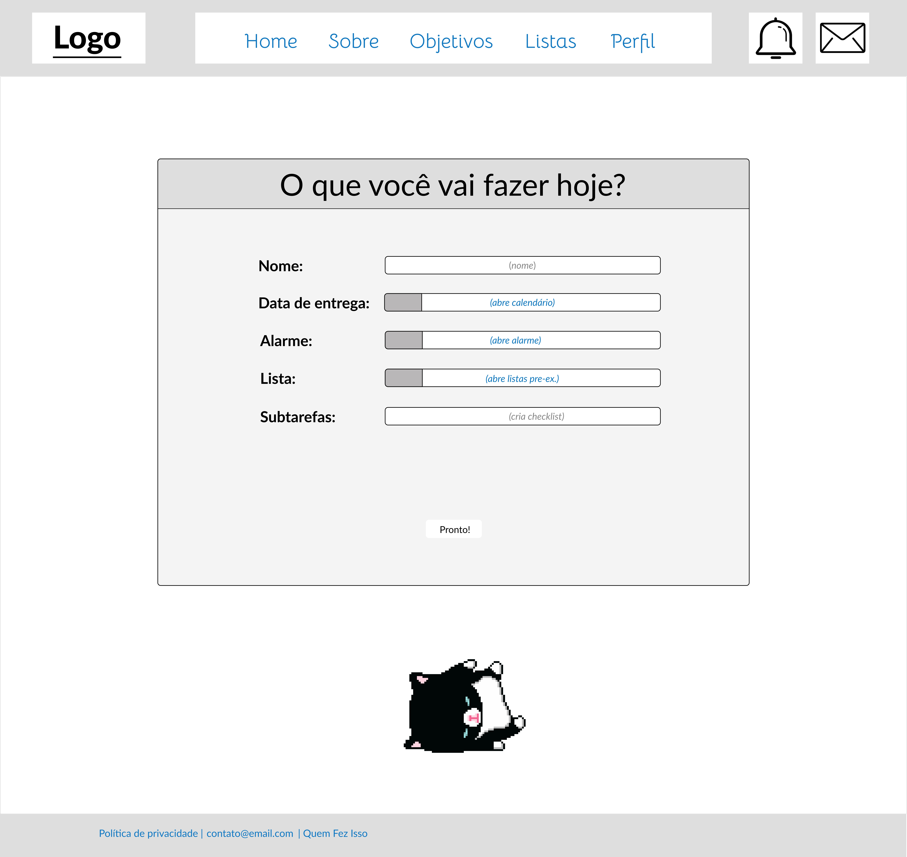
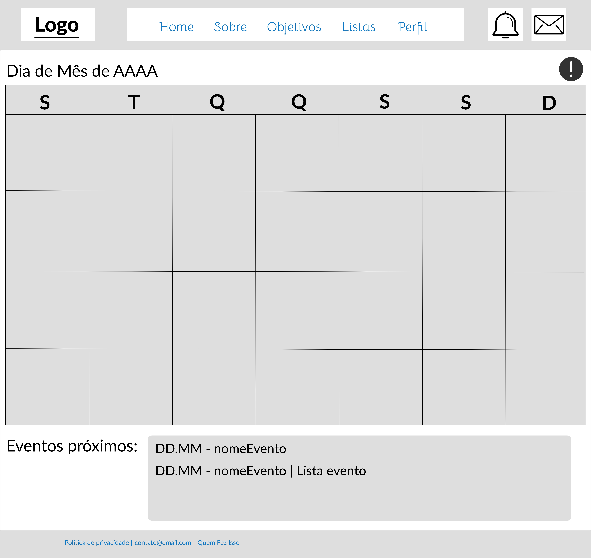
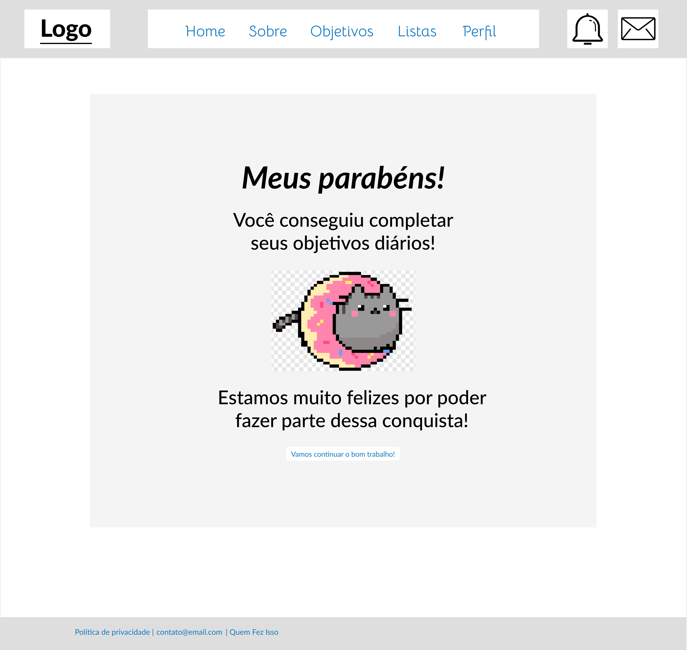
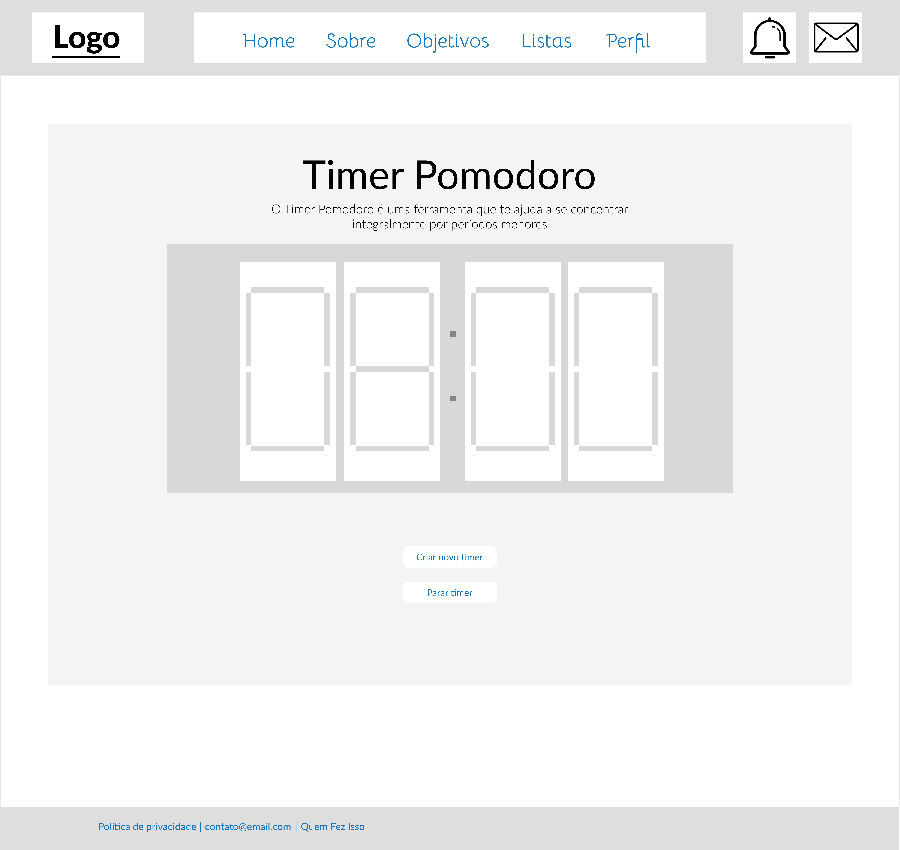
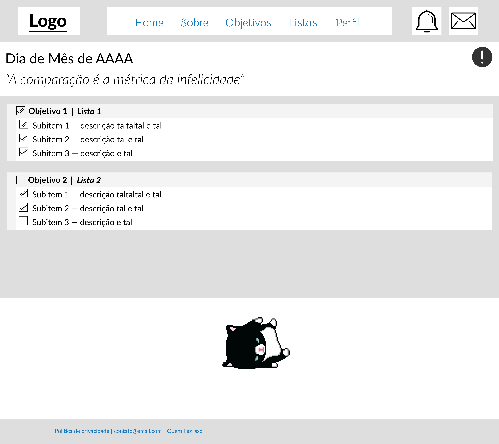
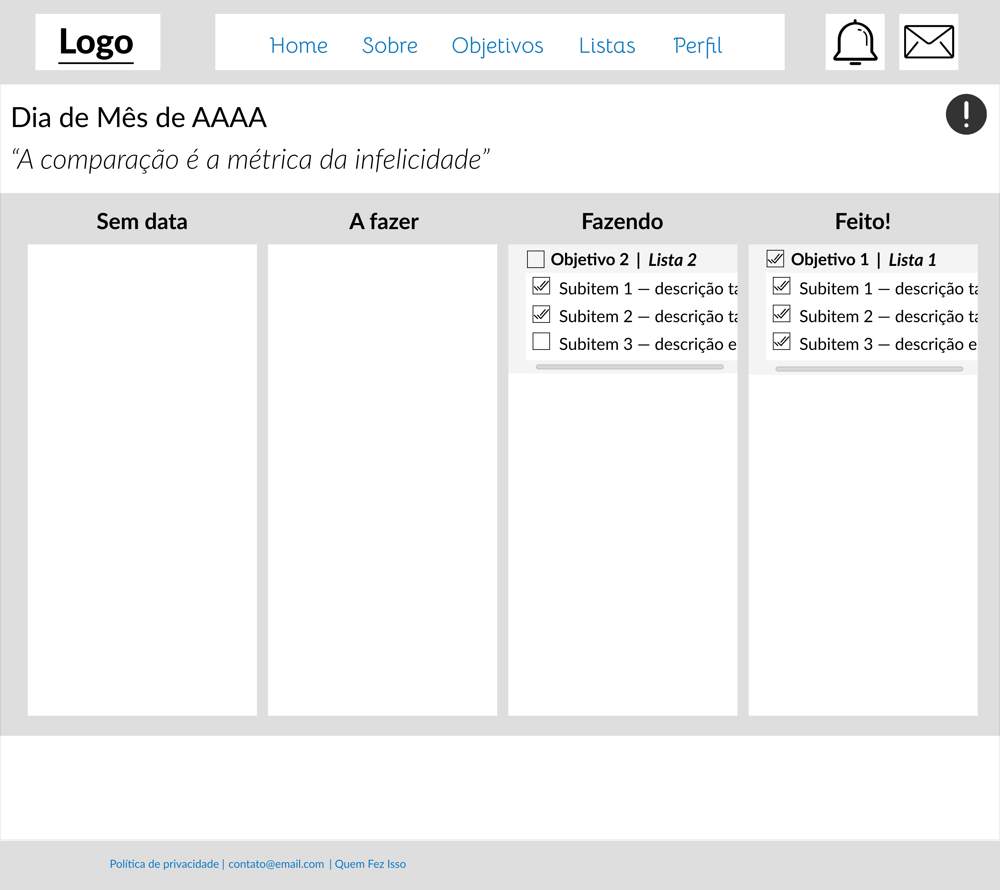

Introdução
Informações básicas do projeto.
Informações Gerais
- Projeto: UKIYO
- Repositório GitHub: Procrastinadores
- Membros da equipe:
Contexto
Detalhes sobre o espaço de problema, justificativas e os objetivos do projeto.
Problema
A procrastinação é um desafio enfrentado por muitas pessoas na sociedade brasileira, e frequentemente,
a falta de meios e conhecimento sobre como lidar com ela impede a superação desse problema. Nesse
contexto, a proposta deste trabalho é apresentar um projeto de desenvolvimento de um aplicativo que visa
auxiliar os brasileiros a combater a procrastinação e melhorar a produtividade em suas vidas.
O projeto, que será desenvolvido pelos membros do grupo, terá várias funcionalidades projetadas para
ajudar os usuários a enfrentar a procrastinação, estabelecer metas e melhorar a gestão do tempo. Os
usuários poderão registrar suas tarefas pendentes, acompanhar seu progresso, definir prazos e até mesmo
serem ranqueados perante seus respectivos progressos.
Neste relatório, serão apresentados os principais pontos que nortearam o processo de especificação e
criatividade do projeto, além dos planos relacionados à metodologia e à interface do aplicativo.
Objetivos
Conforme exposto, o problema que se busca resolver com este projeto é a dificuldade enfrentada na
superação da procrastinação, tanto individualmente quanto em grupos, devido à falta de ferramentas
simplificadas e acessíveis.
O objetivo é proporcionar aos indivíduos uma ferramenta auxiliar para lidar com a procrastinação e
melhorar sua produtividade de forma fácil e integrada.
Justificativa
A gestão eficaz do tempo e a superação da procrastinação oferecem vantagens significativas para
indivíduos que buscam melhorar sua qualidade de vida e aumentar sua produtividade. De acordo com
diversos estudos, a organização do tempo é um componente crucial para alcançar metas pessoais e
profissionais.
A implementação de um sistema de pontuação e ranqueamento na plataforma visa incentivar a produtividade
ao atribuir pontos às tarefas concluídas no prazo, possibilitando aos usuários acompanharem seu
progresso ao longo do tempo, estimulando o estabelecimento de metas pessoais e proporcionando
reconhecimento e recompensas para aqueles que obtêm pontuações mais altas. Esse conjunto de ferramentas
cria um ambiente de competição saudável e responsabilidade mútua, contribuindo para uma gestão mais
eficiente do tempo e a redução da procrastinação.
Público-alvo
Nossa plataforma visa atender a uma ampla gama de usuários interessados em melhorar sua gestão do
tempo, seja para fins pessoais ou profissionais. No entanto, nosso público-alvo primário são homens e
mulheres com idades entre 18 e 30 anos, que buscam aprimorar suas habilidades de gerenciamento de tempo,
aumentar a produtividade e combater a procrastinação.
Esses indivíduos, geralmente empregados ou estudantes, estão interessados em otimizar sua organização
pessoal e maximizar seu tempo de forma eficaz, encontrando soluções práticas para os desafios diários
que envolvem suas responsabilidades pessoais e profissionais.
Concepção (Design Thinking)
Detalhes do processo de discovery do projeto.
Apresente o processo de discovery do projeto. Com foco na experiência do usuário, esse processo abrange a compreensão do contexto do problema e das características do usuário, a definição do problema, a geração de ideias, a prototipagem e a elaboração de uma proposta de solução
Processo de Design Thinking
O arquivo que se segue apresenta o resultado desse processo. "bu
Apresente o processo de Design Thinking realizado pelo grupo e documentado por meio do software Miro. No documento apresentado, devem ser incluídos: (1) a matriz CSD, (2) o mapa de stakeholders, (3) as personas, (4) as respectivas propostas de valor e (5) o processo de ideação identificando as ideias levantadas e sua priorização.
Especificações do Projeto
Documentação das especificações do projeto.
Histórias de Usuários
Com base na análise das personas foram identificadas as seguintes histórias de usuários:
| PERSONA | QUER/PRECISA | PARA |
|---|---|---|
| Pedro Matheus | aumentar sua produtividade nos estudos, conseguindo se concentrar mais no aprendizado, cumprir prazos e gerenciar seu tempo de forma eficaz. Além de criar uma rotina para seguir | alcançar seus objetivos, tanto na faculdade quanto em sua busca por se tornar um streamer famoso |
| Ana Júlia | uma maneira para administrar melhor seu tempo, superar a procrastinação e criar uma rotina mais eficiente - evitando distrações em momentos chave | para equilibrar suas responsabilidades como professora e sua paixão pela fotografia |
Requisitos
As tabelas que se seguem apresentam os requisitos funcionais e não funcionais que detalham o escopo
do projeto.
O escopo funcional do projeto é delimitado através das especificações funcionais que descrevem as
formas de interação dos usuários, bem como dos requisitos não funcionais que detalham as
características que o sistema deve apresentar de forma geral. Esses requisitos são apresentados
abaixo.
Requisitos Funcionais
| ID | Descrição | Prioridade |
|---|---|---|
| RF-001 | Registro de Tarefas: Registre tarefas de forma rápida e simples, incluindo descrições, prioridades e categorias. | ALTA |
| RF-002 | Acompanhamento de Progresso: Acompanhe o progresso das tarefas com gráficos e porcentagens completas. | ALTA |
| RF-003 | Definição de Prazos: Estabeleça prazos com lembretes automáticos para manter o foco. | ALTA |
| RF-004 | Inclusão de Tarefas no Calendário: Adicione tarefas diretamente ao calendário para facilitar o planejamento diário. | ALTA |
| RF-005 | Notificações Personalizadas: Permitir que os usuários configurem notificações personalizadas para lembretes de tarefas e prazos. | MÉDIA |
| RF-006 | Notificações Personalizadas: Configure notificações personalizadas para lembretes de tarefas e prazos. | MÉDIA |
| RF-007 | Timer para Ciclos de Estudo: Configure ciclos de estudo com períodos de foco e descanso para melhorar a gestão do tempo. | MÉDIA |
Requisitos Não-Funcionais
| ID | Descrição do Requisito | Prioridade |
|---|---|---|
| RNF-001 | Desempenho: O site deve ser responsivo e carregar rapidamente, garantindo uma experiência de usuário eficiente. | ALTA |
| RNF-002 | Usabilidade: Priorize a experiência do usuário, com uma interface intuitiva e de fácil navegação. | ALTA |
| RNF-003 | Compatibilidade: Certifique-se de que o site seja compatível com diferentes navegadores e dispositivos, focando nos principais do mercado. | ALTA |
| RNF-004 | Escalabilidade: O site deve ser capaz de lidar com um aumento no número de usuários e conteúdo sem perda significativa de desempenho. | ALTA |
| RNF-005 | Disponibilidade: O site deve estar disponível e acessível a todo momento, garantindo que os usuários possam utilizá-lo sem interrupções significativas. | ALTA |
Projeto de Interface
Artefatos relacionados com a interface e a interacão do usuário na proposta de solução.
User/Screen Flow e Protótipo interativo
Artefatos relacionados com a interface e a interacão do usuário na solução proposta.
O fluxo de usuário (User Flow) é uma técnica que permite ao desenvolvedor mapear todo fluxo de
telas do site ou app. Essa técnica funciona para alinhar os caminhos e as possíveis ações que o
usuário pode fazer junto com os membros de sua equipe. 
Um protótipo interativo apresenta o projeto de interfaces e permite ao usuário navegar pelas
funcionalidades como se estivesse lidando com o software pronto. Veja o exemplo a seguir.
Wireframes
Protótipo de telas do sistema em baixa fidelidade (rascunhos).
Tela Main

Tela Guia Anti-procrastinação

Tela Guia Habilidades Emocionais

Tela Criação de Alarme

Tela Criação de Conta

Tela Criação de Objetivo

Tela de Calendário

Tela de Recompensa

Tela de Timer

Tela de Objetivos Diários

Tela de Objetivos Kanban

Metodologia
Detalhes sobre a organização do grupo e o ferramental empregado.
Nesta parte do documento, você deve apresentar a metodologia adotada pelo grupo, descrevendo o processo de trabalho baseado nas metodologias ágeis, a divisão de papéis e tarefas, as ferramentas empregadas e como foi realizada agestão de configuração do projeto via GitHub.
Coloque detalhes sobre o processo de Design Thinking e a implementação do Framework Scrum seguido pelo grupo. O grupo poderá fazer uso de ferramentas on-line para acompanhar o andamento do projeto, a execução das tarefas e o status de desenvolvimento da solução.
Ferramentas
Relação de ferramentas empregadas pelo grupo durante o projeto. t
Liste as ferramentas empregadas no desenvolvimento do projeto, justificando a escolha delas, sempre que possível. Inclua itens como: (1) Editor de código, ferramentas de comunicação, ferramentas de diagramação, plataformas de hospedagem, entre outras.
| Ambiente | Plataforma | Link de Acesso |
|---|---|---|
| Processo de Design Thinking | Miro | https://miro.com/app/board |
| Repositório de código | GitHub | https://github.com/ICEI-PUC-Minas-PPLCC-TI/Procrastinadores |
| Hospedagem do site | Github Pages | https://siriusvllos.github.io/projeto |
| Protótipo Interativo | Figma | https://figma.com/XXXXXXX |
Gestão do Projeto
Divisão de papéis no grupo e apresentação da estrutura da ferramenta de controle de tarefas (Kanban).
Apresente a divisão de papéis e tarefas entre os membros do grupo. Informe quem é o Scrum Master, o Product Owner e os desenvolvedores. Informe também quem é o responsável pela documentação do projeto.
ARTHUR — tela de criação de objetivos, tela de objetivos diários
FLÁVIA — página do Calendário, página de Timer
MATTEO — tela de objetivos em Kanban, tela de criação de alarmes
PEDRO — documentação, página principal (Main), e página de recompensa
SIRIUS — gerenciamento do GitHub, guia Anti-procrastinação, guia de Habilidades
Controle de Versão
Estrutura do fluxo de trabalho no ambiente do GitHub.
Discuta como a configuração do projeto foi feita na ferramenta de versionamento (GitHub). Exponha
como a gerência de tags, merges, commits e branchs é realizada. Discuta como a gerência de issues foi
realizada.

...... COLOQUE AQUI O SEU TEXTO ......
Solução
Esta seção apresenta todos os detalhes da solução criada no projeto.
Apresente cada uma das funcionalidades que a aplicação fornece tanto para os usuários quanto aos administradores da solução.
Inclua, para cada funcionalidade, itens como: (1) titulos e descrição da funcionalidade; (2) Estrutura de dados associada; (3) o detalhe sobre as instruções de acesso e uso.
Video do Projeto
O vídeo a seguir traz uma apresentação do problema que a equipe está tratando e a proposta de solução. type
O video de apresentação é voltado para que o público externo possa conhecer a solução. O formato é livre, sendo importante que seja apresentado o problema e a solução numa linguagem descomplicada e direta.
Utilize o recurso de compartilhamento via embed e inclua o vídeo logo abaixo.
...... COLOQUE AQUI O SEU VIDEO ......
Funcionalidades
Esta seção apresenta as funcionalidades da solução. ton"
Apresente cada uma das funcionalidades que a aplicação fornece tanto para os usuários quanto aos administradores da solução.
Inclua, para cada funcionalidade, itens como: (1) titulos e descrição da funcionalidade; (2) Estrutura de dados associada; (3) o detalhe sobre as instruções de acesso e uso.
Funcionalidade 1 - Cadastro de ContatosEXEMPLO
Permite a inclusão, leitura, alteração e exclusão de contatos para o sistema
- Estrutura de dados: Contatos
- Instruções de acesso:
- Abra o site e efetue o login
- Acesse o menu principal e escolha a opção Cadastros
- Em seguida, escolha a opção Contatos

Estruturas de Dados
Descrição das estruturas de dados utilizadas na solução com exemplos no formato JSON.
Apresente as estruturas de dados utilizadas na solução tanto para dados utilizados na essência da aplicação quanto outras estruturas que foram criadas para algum tipo de configuração
Nomeie a estrutura, coloque uma descrição sucinta e apresente um exemplo em formato JSON.
Estrutura de Dados - ContatosEXEMPLO
Contatos da aplicação
{
"id": 1,
"nome": "Leanne Graham",
"cidade": "Belo Horizonte",
"categoria": "amigos",
"email": "Sincere@april.biz",
"telefone": "1-770-736-8031",
"website": "hildegard.org"
}
Estrutura de Dados - UsuáriosEXEMPLO
Registro dos usuários do sistema utilizados para login e para o perfil do sistema
{
id: "eed55b91-45be-4f2c-81bc-7686135503f9"
email: "admin@abc.com"
id: "eed55b91-45be-4f2c-81bc-7686135503f9"
login: "admin"
nome: "Administrador do Sistema"
senha: "123"
}
Módulos e APIs
Esta seção apresenta os módulos e APIs utilizados na solução. "
Apresente os módulos e APIs utilizados no desenvolvimento da solução. Inclua itens como: (1) Frameworks, bibliotecas, módulos, etc. utilizados no desenvolvimento da solução; (2) APIs utilizadas para acesso a dados, serviços, etc.
Images:
- Unsplash - https://unsplash.com/EXEMPLO
Fonts:
- Icons Font Face - https://fontawesome.com/EXEMPLO
Scripts:
- jQuery - http://www.jquery.com/EXEMPLO
- Bootstrap 4 - http://getbootstrap.com/EXEMPLO
FAQ
Perguntas e respostas comuns associadas ao projeto.
Apresente uma lista de perguntas e respostas comuns associadas ao projeto. Inclua perguntas como: (1) detalhes de acesso e uso do projeto; (2) informações sobre a instalação e configuração da aplicação; (3) questões sobre a manutenção da aplicação; (4) detalhes sobre a integração da aplicação com outros sistemas; (5) questões sobre a segurança da aplicação.
Referências Bibliográficas
Esta seção apresenta as referências bibliográficas utilizadas no projeto.
Apresente as referências bibliográficas utilizadas no projeto. Inclua itens como: (1) livros, artigos, tutoriais, etc. utilizados no desenvolvimento da solução; (2) links para sites, blogs, etc. utilizados no desenvolvimento da solução.
...... COLOQUE AQUI O SEU TEXTO ......